Wisior Cztery Żywioły
W4 · patynowanaW harmonii dynamicznej (romb) wprowadza więcej energii i zdecydowania.
385 zł
Projektujemy i wykonujemy ją ręcznie w Pracowni Autorskiej Stankiewicz pod Kętrzynem, z intencją i przesłaniem.
Zobacz biżuterię
Słoneczny Krąg
W1Krzyż wpisany w krąg wyraża szczególny związek nieba i ziemi. Ten sam znak jest w naszym logo.
Stałe wzory WAREGENA w pięciu działach. Każdy wzór powstaje w trzech wykończeniach: zieleń patyny, chłód srebra albo ciepło złota.
„Każdy wzór ma nazwę własną, imię, by nie stał się tylko numerem w katalogu, ale by mógł żyć własnym życiem i własną energią.”
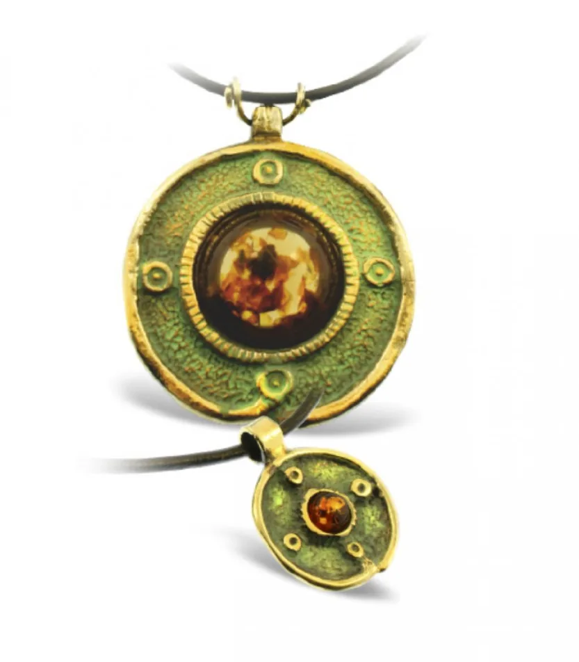
Daje bezpieczeństwo i siłę.

Przynosi pomyślność we wszystkich sferach życia.

Przynosi wyciszenie i wewnętrzny spokój.

Symbol bogactwa, zdrowia, płodności, odrodzenia, oczyszczenia, życia i nieśmiertelności.
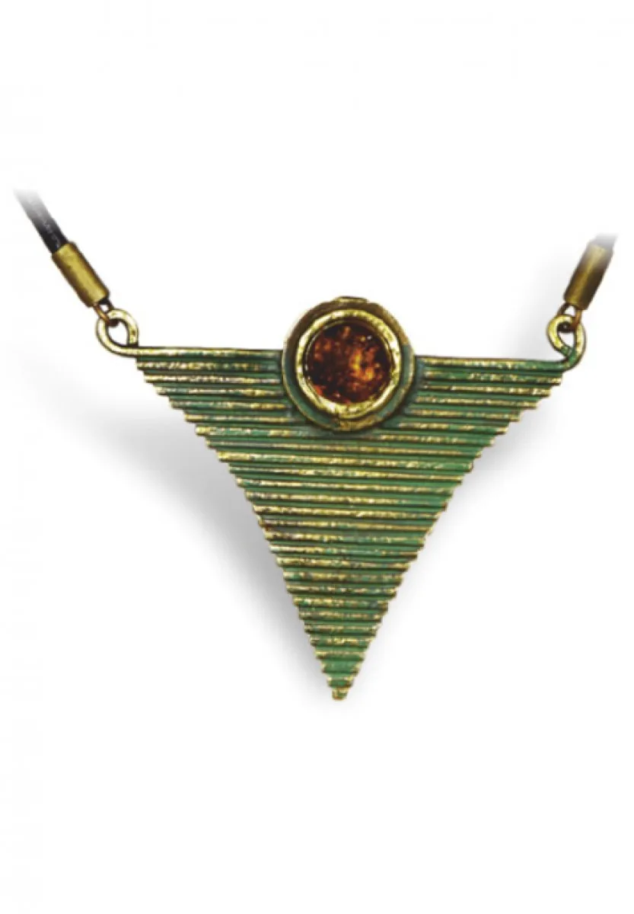
Ten, który chroni.
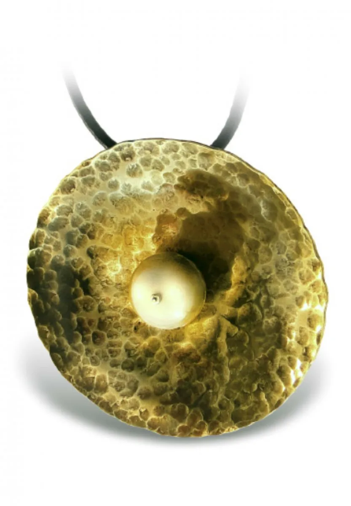
Symbol rozkwitu, pełni i prosperity.

To wrota do: mądrości i oświecenia, pozwala otworzyć intuicję i kosmiczną świadomość, chroni przed negatywnymi energiami.
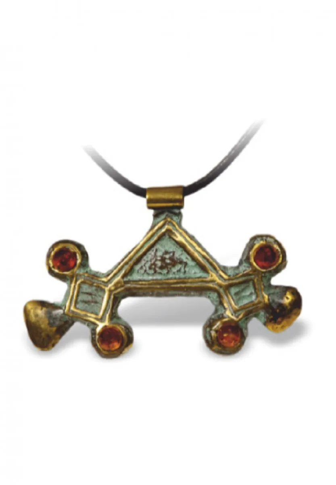
Dodaje odwagi i pewności siebie.

Pozytywnie oddziałuje na sferę emocjonalną, wzmocnienie dobrą energią dużego bursztynu.
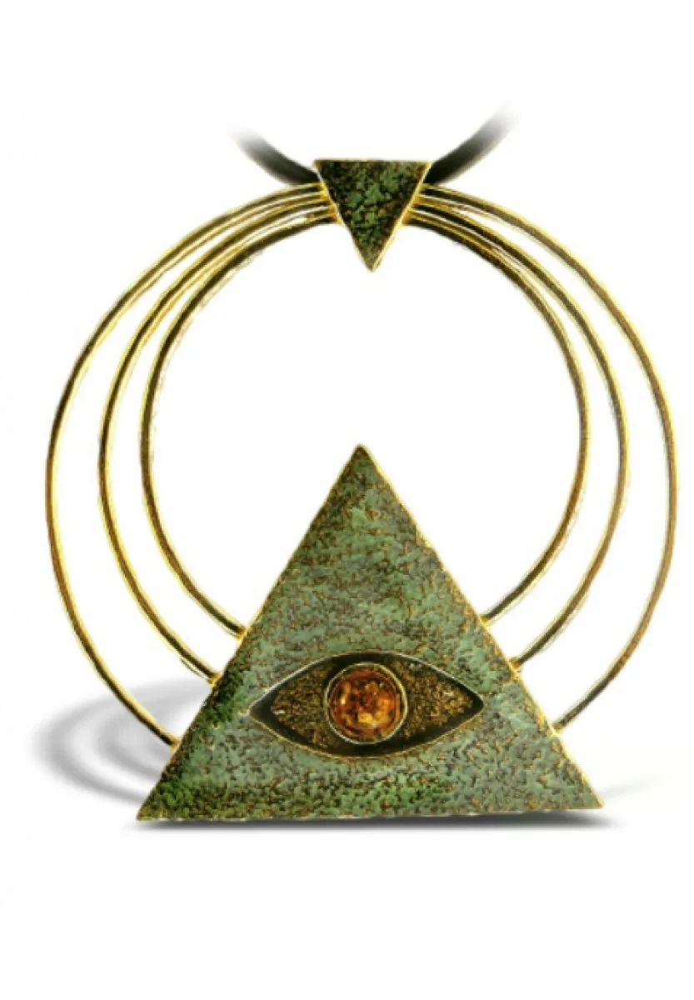
Symbol nieskończoności, istnienia poza czasem.
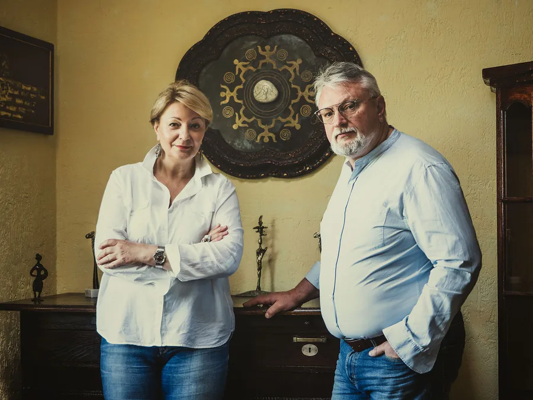
Tak w języku dawnych plemion Warmii i Mazur, Bartów, Galindów i Jaćwięgów, nazywano moc życia. Ich ozdoby zainspirowały naszą kolekcję „Magiczna Biżuteria Warmii i Mazur”.
Biżuteria wchodzi z nami w relację jak kamerton, dostrajając to, co jest w nas roztrojone. Mosiądz, brąz i srebro, bursztyn, krzemień pasiasty, granit mazurski.
Z wdzięcznością za dar, Jolanta i Jerzy Stankiewicz
W harmonii dynamicznej (romb) wprowadza więcej energii i zdecydowania.
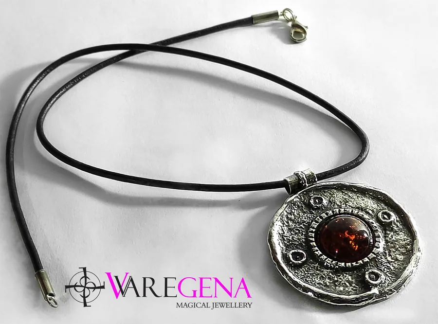
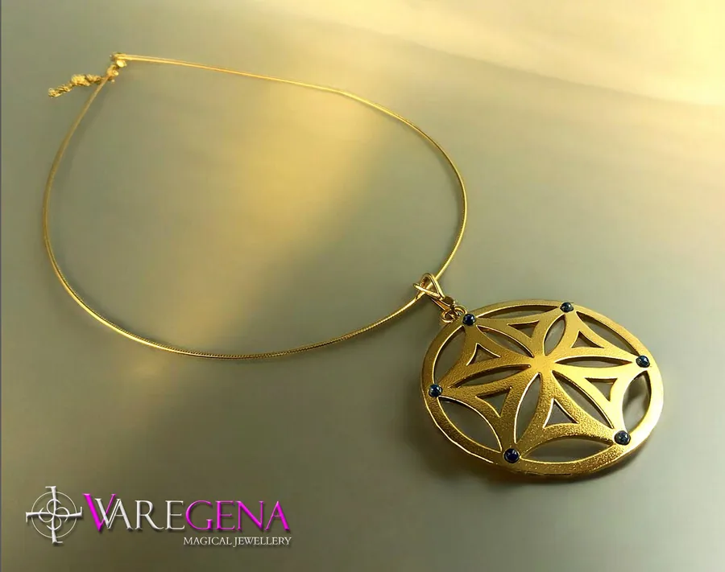
Z kolekcji Nowa Era. Uważa się, że ten wzór jest pełen energii i mocy.

Dźwięk dzwonków wprowadza w mistyczny świat.
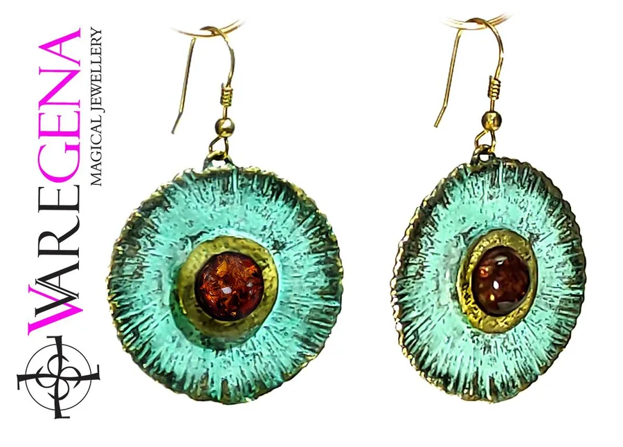
Jest wyrazem nieskończoności, wieczności, doskonałości i czystości.

Przyciąga, rozwija i wspiera związki partnerskie.
Nowe wzory oraz prace, które powstają tylko w jednym egzemplarzu, jak rzeźbiarskie formy z cyklu Życie.
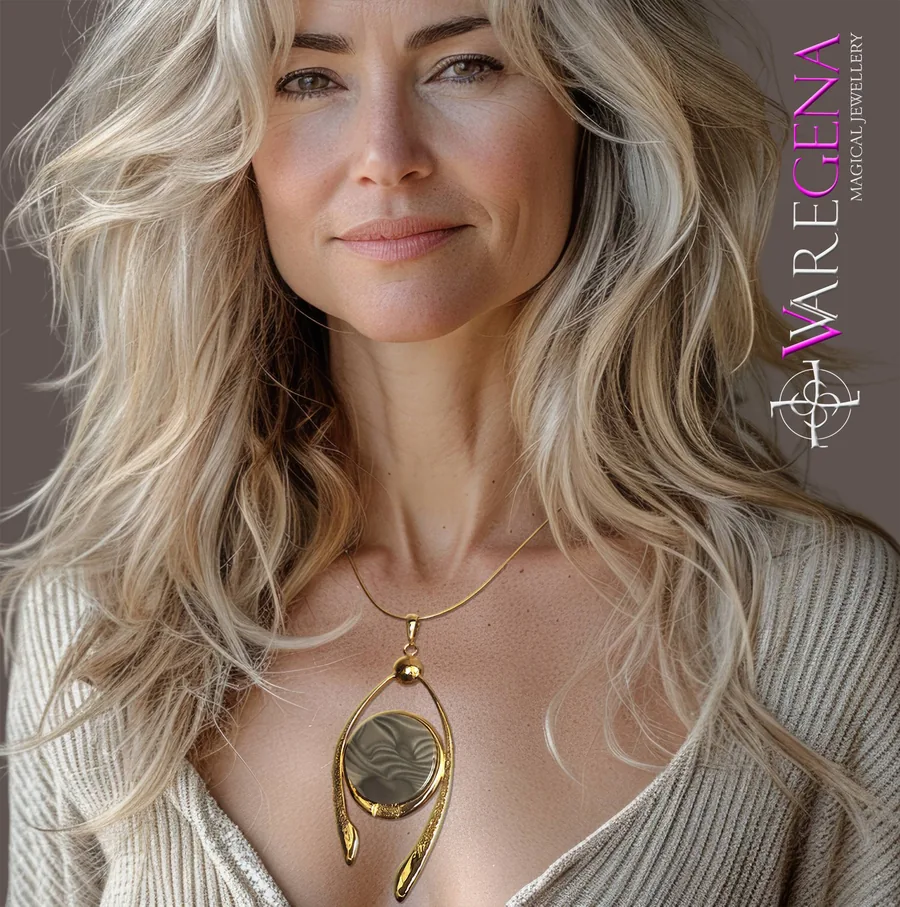
Krzemień pasiasty jest przede wszystkim kamieniem optymizmu.
Z kolekcji Nowa Era. Uważa się, że ten wzór jest pełen energii i mocy.
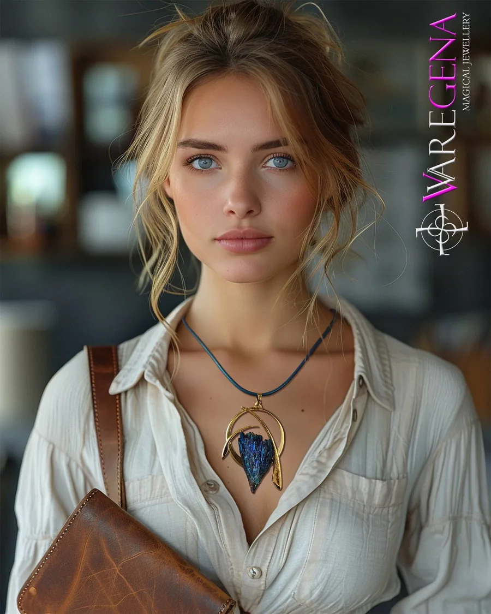
Kwarc tytanowy ma rozpraszać smutek i dodawać pewności siebie.
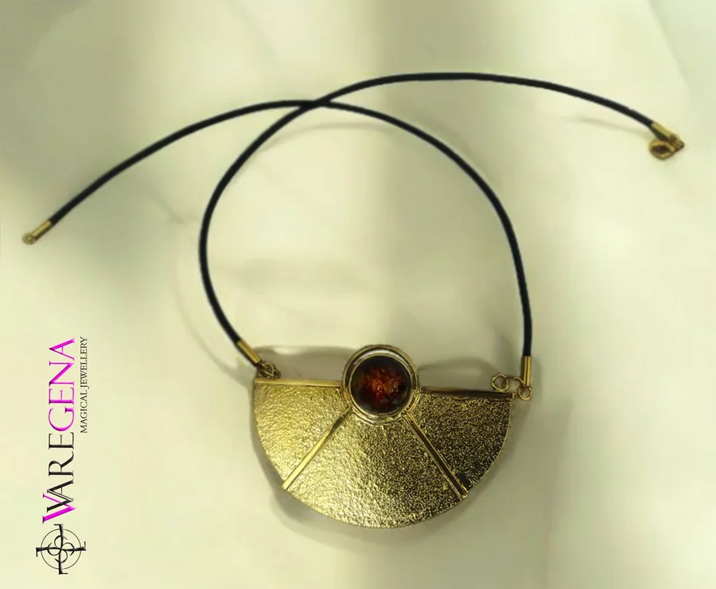
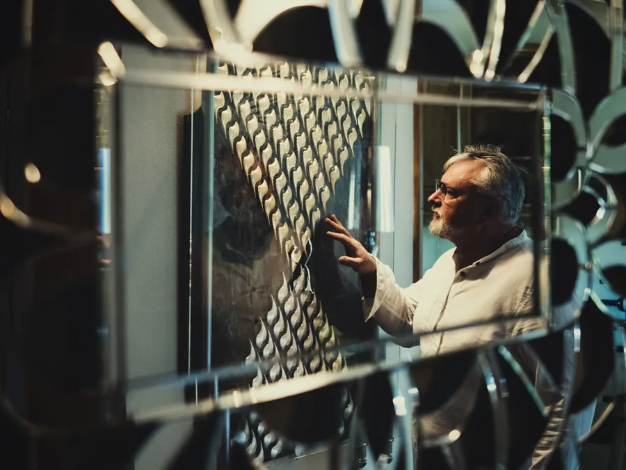
Wzory projektuje Jerzy Stankiewicz, artysta rzeźbiarz, zafascynowany kulturą pradawnych mieszkańców Warmii i Mazur. Jolanta Stankiewicz prowadzi pracownię i dba o wszystko, co dzieje się wokół biżuterii.
Każdy egzemplarz ma cechy indywidualne, które powstają przy ręcznym wykonaniu. Na życzenie dobieramy długość rzemienia i wykonujemy biżuterię na indywidualne zamówienie.
„Wartość rzeczy określa miłość włożona w jej stworzenie.” Eileen GrayPoznaj pracownię